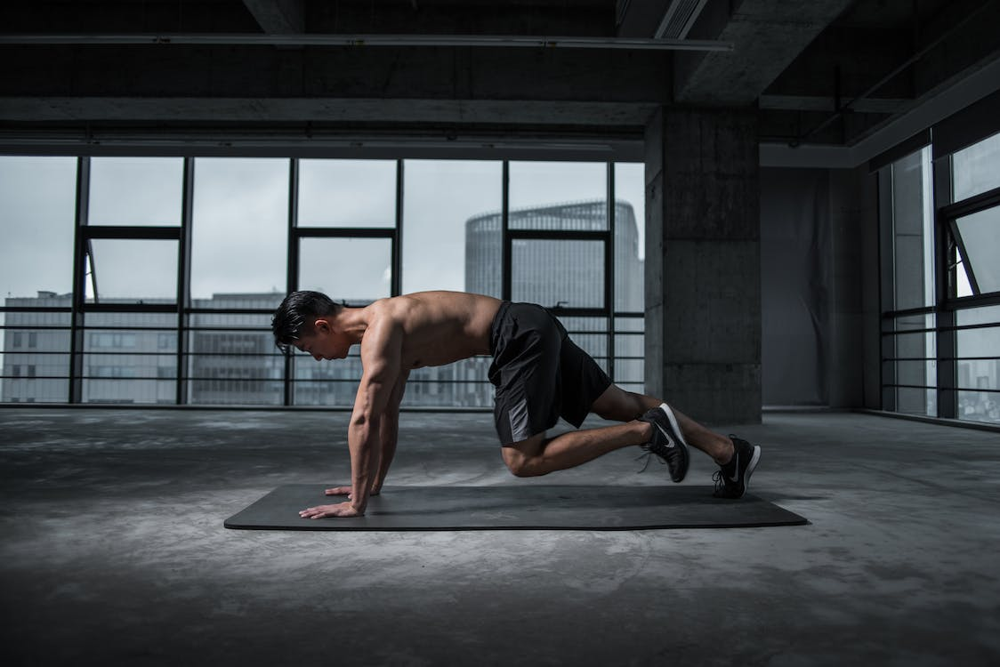

Protocolo de Acondicionamiento Fisico
Oct 10, 2023 | A. Huberman
El protocolo de acondicionamiento físico se centra en la salud, la longevidad y el equilibrio estético cada día de la semana. Está diseñado para modificarse para satisfacer sus necesidades individuales, sin dejar de cumplir con lo que la ciencia nos dice que todos debemos hacer para tener una salud inmediata y a largo plazo.
Reconozco que existe una variedad de mejores prácticas con respecto al ejercicio y el entrenamiento óptimo (por ejemplo, escuche al Dr. Andy Galpin describir las nueve adaptaciones físicas del ejercicio). Diseñé este protocolo para abordar todos los objetivos principales de acondicionamiento físico, incluida la fuerza, la hipertrofia, la resistencia y el entrenamiento cardiovascular. A continuación, describo el protocolo, incluyo sugerencias de ejercicios específicos (ejemplos modificables) y explico formas de modificar este programa básico, si así lo desea. También proporciono consejos para integrar un régimen de ejercicio constante en su semana, pero con flexibilidad.
Entrenamiento de resistencia
Dos principios clave para el entrenamiento de resistencia te ayudarán a aprovechar al máximo el protocolo fundamental:
- Utilice programas de entrenamiento alternativos (“periodización”) para optimizar su fuerza e hipertrofia muscular. Alternar entre el Anexo A y B mensualmente:
- Programa A: ~4-8 repeticiones (pesos más pesados) y 3-4 series por ejercicio con 2-4 minutos de descanso entre series
- Programa B: ~8-15 repeticiones (pesos moderados-ligeros) y 2-3 series por ejercicio con ~90 segundos de descanso entre series
- Elige dos ejercicios por grupo muscular. El ejercicio n.º 1 debe centrarse en llevar el músculo a una posición acortada o contraída al máximo al final del rango de movimiento (por ejemplo, flexión de piernas, elevación de pantorrilla sentado, flexión de predicador de bíceps, extensión de piernas, cruce de cables en el pecho). El ejercicio n.º 2 debe centrarse en la resistencia que se produce en el grupo de músculos cuando está en una posición alargada (por ejemplo, elevaciones de pantorrillas de pie, flexiones inclinadas con mancuernas, sentadillas profundas, elevaciones de glúteos e isquiotibiales o peso muerto con las piernas estiradas, press inclinado, etc.).
*Mantenga los entrenamientos con pesas en 50-60 minutos de trabajo duro después de un calentamiento, 75 minutos como máximo. Esto ayuda a la eficacia y la recuperación. Los 75 minutos incluyen descanso entre series y requieren no quedarse atascado esperando demasiado tiempo por el equipo, evitar enviar mensajes de texto entre series, etc. Calienta y luego termina.
Protocolo de Acondicionamiento Fisico
He creado la siguiente rutina para abarcar el entrenamiento para todos los objetivos principales de aptitud física en el transcurso de una semana. Este protocolo también fue diseñado para apuntar a grupos de músculos dos veces por semana: un día directamente y otro día indirectamente.
Empiezo con el Día 1 el domingo y termino con el Día 7 el sábado; sin embargo, modifique el día de inicio para que tenga sentido para su horario.
Ver protocolo de fitness en PDF
Modificaciones y notas del protocolo
Si bien he incluido sugerencias de ejercicios en el PDF, elija el ejercicio que pueda realizar correctamente, en un rango completo de movimiento y con la forma adecuada. El mejor ejercicio que puedes hacer para una parte del cuerpo es aquel que puedes realizar de forma segura. Además, ajústelo según sus fortalezas y debilidades. Confieso que nunca entreno mi pecho, pero sí entreno suficiente pecho con los fondos. Ese soy yo. Debe capacitarse para sus necesidades en lo que respecta a las necesidades estéticas y de seguridad.
Ajuste las sugerencias de ejercicios anteriores según su nivel de condición física o sus objetivos personales, manteniendo el rango de objetivos físicos a lo largo de la semana. Si bien los días específicos en los que realiza cada entrenamiento no son importantes, el espacio entre los días ayuda a garantizar una recuperación adecuada. Además, si te saltas un día, puedes duplicar algunos entrenamientos más adelante en la semana. A veces cambio los días 4 y 5 si es necesario.
Si decide ajustar los días de entrenamiento, tenga en cuenta que muchos estudios han encontrado que la inmersión en frío (es decir, baños de hielo) atenuará algunas mejoras de fuerza/hipertrofia de la sesión de entrenamiento de ese día. Por lo tanto, absténgase de tomar baños de hielo inmediatamente después del entrenamiento de resistencia. (Es probable que las duchas frías no tengan el mismo efecto). Si realiza baños de hielo los días de entrenamiento con pesas, espere de 6 a 8 horas o hágalo antes de entrenar.
Respiración
Durante el entrenamiento de resistencia, reduzca su frecuencia cardíaca entre series utilizando suspiros fisiológicos: haga dos inhalaciones completas por la nariz seguidas de una exhalación completa por la boca, tratando de liberar todo el aire de sus pulmones.
Después de una sesión de entrenamiento, utilice de 3 a 5 minutos de respiración lenta y deliberada para "desacelerar" el sistema nervioso, relajar la mente y el cuerpo y ayudar a la recuperación muscular.
Flexibilidad
Realizar estiramientos estáticos es la mejor manera de mejorar su flexibilidad general. Mantenga cada grupo de músculos principal en un estiramiento estático durante 30 a 60 segundos y repita entre 3 veces por semana y diariamente. Hago esto por la noche antes de dormir o mientras espero que se cocine la cena o (¡confesión!) Mientras estoy en llamadas de trabajo. Mientras mantienes el estiramiento, las exhalaciones largas relajarán aún más los músculos y profundizarán el estiramiento.
Entrenamiento rápido vs. alimentado
Esto depende de sus preferencias personales. Me gusta entrenar en ayunas y antes del mediodía, pero después de beber cafeína, agua y electrolitos, porque no me siento lento durante los entrenamientos, pero si solo comes una comida y el tiempo es limitado, es más importante hacer ejercicio que no hacerlo. tren. Algunas personas prefieren entrenar después de comer. Es muy individual. No hago ejercicio con pesas por la noche porque me mantiene despierto. El cardio no parece tener el mismo efecto en mí.
Obstáculos de entrenamiento
Si bien el objetivo es la capacitación constante, es probable que enfrente obstáculos del mundo real:
- Enfermedad/Resfriado: A veces, con síntomas leves de resfriado, un entrenamiento corto y más ligero (disminuyendo la duración y/o la intensidad del entrenamiento en un 50 % o más) le ayudará a sentirse mejor. Sin embargo, es mejor saltarse el entrenamiento y darse tiempo para recuperarse, si está realmente enfermo. Una vez recuperado, regrese lentamente a su programa de entrenamiento durante 3 a 7 días.
- Mal sueño/eventos estresantes: considere saltarse su entrenamiento si se encuentra bajo estrés crónico, a menos que crea que puede ayudarlo a restablecerse. Concéntrese en dormir bien por la noche o relajarse, y duplique sus ejercicios más adelante en la semana.
- Además, pruebe de 10 a 30 minutos de descanso profundo sin dormir (NSDR) para sentirse más renovado. Después, es posible que te sientas con ganas de hacer el entrenamiento programado.
- Para obtener herramientas adicionales para el estrés, consulte este episodio.
Gracias por leer
Encuentra mas información en el post original del Dr. Andrew Huberman
CONTINUA LEYENDO